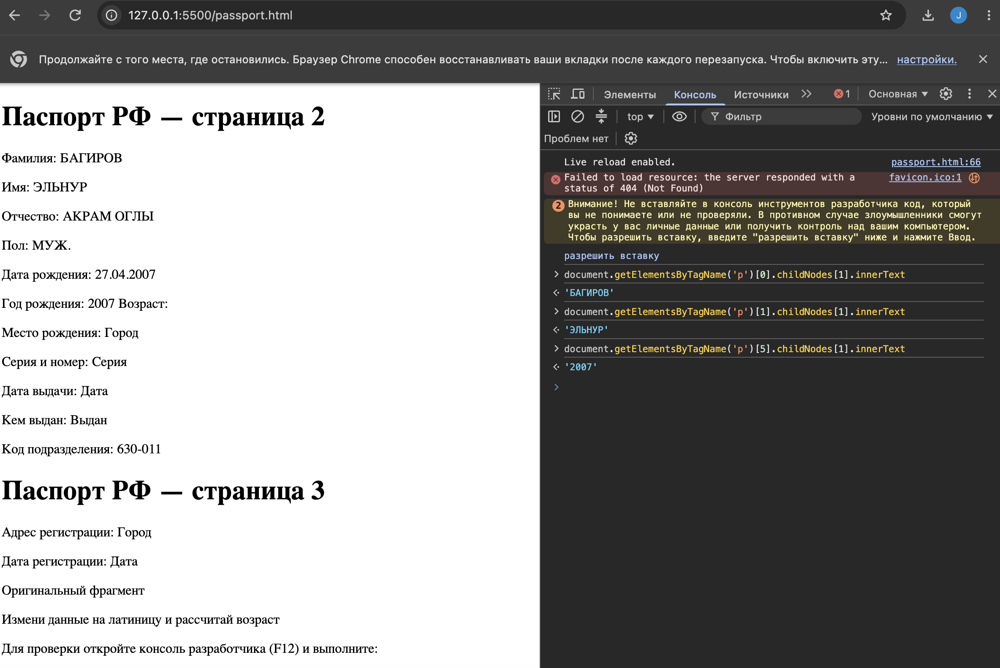

DOM_JS. Считываем информацию из DOM
Откройте страницу паспорта и в консоли разработчика выполните:
document.getElementsByTagName('p')[2].childNodes[1].innerText // Фамилия
document.getElementsByTagName('p')[3].childNodes[1].innerText // Имя
document.getElementsByTagName('p')[7].childNodes[1].innerText // Год рождения
Результат считывания информации из DOM
